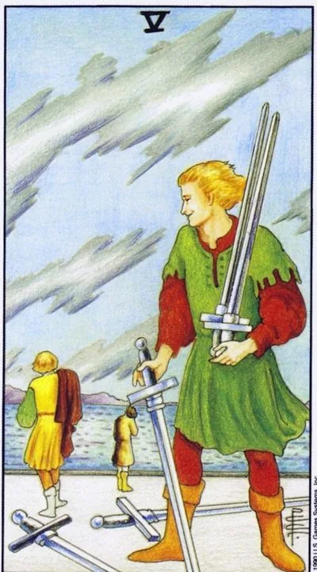

Minor Arcana · Swords
VFive of Swords
A grinning winner collects other people’s blades, the defeated leave after a swelling: a gain that is shameful to put in the diary of achievements.
Archetype and core meaning
A man with a sly grin picks up other people's swords; two defeated men walk away without turning around, and the sky remains torn, a score that is formally crushing, in fact a minus for all involved: a conflict where victory has been more expensive than a relationship.
The card is two-faced. Sometimes you're the one with a grin: the trophy is won by pressure or intrigue and it doesn't make you happy, it gets the contempt of others. Sometimes you're the ones who leave: the argument is won more brazenly, and the main question now is what to do with that experience. Five teaches you to distinguish between right and effective.
Daily life
It's a domestic conflict that's been won on nerves: you insist on your own, you win back the parking lot, you put your relative in his place, and you play through the sediment all day long. It's cheaper to end a domestic war with a truce than to win. In the evening, honestly ask yourself, did I defend interest or self-esteem?
Work and career
Office fights without rules: a colleague appropriated an idea, a boss criticized publicly, a tender was taken by dumping, buried margins. You may be acting hard yourself, effectively realizing that bridges are burning. Count not only trophies, but also bills. After losing, watch the behavior of the defeated: it is remembered longer than losing.
Relationships
A fight where the argument won and the pair lost: the partner is crushed by logic and fell silent, the distance has grown by kilometers. Old sins are put into action like ammunition - this is not forgotten quickly. The card's question is edged: are you allies in the same trench or opponents?
Health
Conflict-based stress: pressure surges, stomach shrinks, gastritis escalates after a hard conversation; aggression is dangerous when turned inwards; psychosomatics likes the unspoken; sports competition for anger is traumatic: today, swimming pool is better than martial arts.
Spiritual meaning
The shadow side of the force: the magic of suppression works -- and binds the operator in a karmic knot. Revenge rituals return the performer to the form of his own cruelty. Healthy work is the analysis of the inner warrior: where do I cunning where I could speak straight? Defense is permissible, aggression is always duty.
The blades are falling: the desire to find out who is whom is fading away – the slow clearing of rubble after the conflict and the reckoning of the war begins.
Archetype and core meaning
The afterword to battle in three senses: Abandon: someone first reaches out, it becomes clear that the war is more expensive than the lost face; some of the trophies are returned to the owners. Payback: intrigue is uncovered, allies have turned away, the reputation of the manipulator has begun to work against him.
The third sense is more subtle: the fatigue of fighting itself, the fact that one finds that one no longer wants to win even where one can, not weakness, but growing up: the force that fed the opposition seeks better uses, which is a turn the card calls the world — first internal, then external.
Daily life
After a week of friction, the air is fresh: neighbors apologize, family pretends that Saturday's scandal was a dream, you want to make amends, buy something for the table, say an extra thank you. To take the first step is not to lose. But don't force it: some relationships need more silence than they seem.
Work and career
Conflict is over: the former adversary offers cooperation, the leadership admits excesses, the possibility of leaving a toxic environment — dismissal as demobilization, not defeat. If you pressed, trust will have to be restored: it is slower than winning an argument, but feasible. The best move is transparency.
Relationships
The post-ice age thaw: for the first time in a long time, talking about what's next, not who's to blame; someone saying "sorry" without "but"; old grievances losing their status as a battle flag; repair is possible if both agree to pay for it with honesty; the card gives cautious hope.
Health
Relief after prolonged stress: blood pressure decreases, sleep returns, the stomach stops shrinking. Any change of environment helps - vacation, another workplace, getting out of the toxic circle. Careful with conflict eating: anxious appetite is deceptive. Stretching, warm water, massage.
Spiritual meaning
Détente: the nodes of conflict are unleashed, the damage is no longer resentful, the defense works are no longer necessary. It is a good time for candles for reconciliation and cleansing the house after scandals. The main principle: let go of the debtor is to free yourself first. The best defense against enemies is to stop creating them.
🌿 How the school reads this rank
The main idea
The first practical victory. The skill has already been applied, but the victory is still intermediate and requires continuation.
How it manifests
In work, it's a promotion, a winning argument, or a new level of responsibility. In relationships, it's a big step, like acknowledging your feelings. In development, it's the understanding that after you win, you start the next step.
The shadow side
The person gets the result he fought for and realizes he wanted something different.
Keywords
Intermediate victory · skill · decisive step · courage · consequences
📜 In detail — from the rank lecture
Essence of the card
application of the skill: in the four fixed the method of action (“warriors repeat injections to consolidate muscle memory”), in the five you act quickly and defeat those who did not learn.
Upright position
- The traditional "victory" school cools down: two on the card leave alive and whole - "the problem is not solved to the end." The victory is intermediate: the analogy of the Second World War - "the last German soldier fled outside the Soviet Union: their land was liberated, but there is still a war for Europe, to Berlin, where you kill the dragon in the lair."
- Relationships: Overcoming the fear of “either now or never” – saying “I actually love you”; success is temporary, the future depends on further action.
- Work: the salesman is promoted to the head of the branch. Direct - the joy of the winner; inverted - "the office was given, and there the schedules, suppliers, customer conflicts, pay is no easier organizational work; won - but flew by."
Negative meaning
• The story is completely reversed: you got — and "this is not what I wanted": "were going to the victory of communism, came in trouble", "fight and fought for what we fought for, and then ran into"; you bought a car — it turned out that before work it was faster and calmer. Bottom line: both cards are victory, "either rejoicing or upset that it is in between."
School emphases and distinctive points
- Waite deliberately made the fives gloomy for the sake of emotional coloring, but in some places “radically overburdened” / “colored” – primarily five pentacles and cups; in practice, the cards are played softer.
- The details of the drawing = meaning: the window of the temple is an opportunity; blood and water are the sufferings of Christ; torn clouds and fluttering hair are the movement of air; fighters have different clothes – “they are from different houses, each defends his interest.”
- Slavic-Soviet series: social competitions, engineering 120 rubles, valenki, a fur coat of a neighbor from a black burka, "with a nice paradise and in a hut."
- Four elements through Buratino: Harlequin – fire, Piero – water, Artemon – swords / protector, Malvina – earth / pragmatic teacher; Buratino – a person who unites all the elements.
- Typology of men in suits (jealousy): rod loves sparring, swords respond with “direct war”, cup suffers, “daddy-son” leaves the competition.
- Methodology: card of the day as a task for students; without signifiers ("12 zodiac signs deeper than four queens"); the predominance of suits in the scenario is a psychotype; intuition is above logic (Yuriy Khan recommends only logicians): "cards can not be checked and rechecked - you can only feel."
Keywords
Intermediate victory, muscle memory, decisive blow, "live with it now", victory-disappointment.